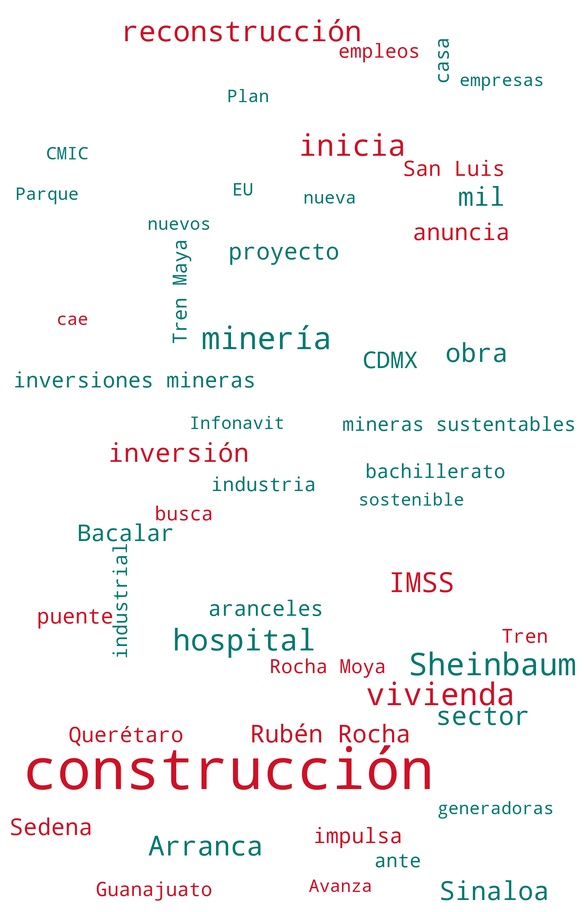

Este tablero refleja un monitoreo de la presencia en medios de comunicación digitales de la empresa USG, así como de términos relacionados con la misma.


| Fecha | Resumen | Nube de Palabras |
|---|---|---|
| 06/03 - 04/04 | En el último mes, la industria de la construcción ha experimentado una serie de dinámicas significativas a nivel regional y global. En México, la construcción de infraestructura y vivienda ha seguido siendo una prioridad, con el inicio de importantes proyectos de infraestructura, como el Tren México-Querétaro y el incremento de la construcción de viviendas en Tabasco, donde se anunció que las escrituras estarán a nombre de las jefas de familia. Además, se han reportado avances en la construcción de hospitales y planteles educativos en varios estados, lo que sugiere un enfoque creciente en el desarrollo social e infraestructura de salud.
Al mismo tiempo, algunos proyectos enfrentan desafíos, como los retrasos en la construcción de vivienda para jóvenes en la Ciudad de México y las protestas comunitarias en Bacalar contra proyectos de construcción sin los permisos adecuados.
En el ámbito internacional, se observan inversiones significativas en la construcción de infraestructuras en Norteamérica y Europa. En Estados Unidos, el gasto en construcción ha mostrado un crecimiento interanual, lo que se refleja en el impulso de proyectos como la reconstrucción en Los Ángeles y el desarrollo de infraestructuras logísticas en México. La colaboración entre la Unión Europea y Chile en proyectos de energía verde y minería también destaca, subrayando el interés internacional en la sostenibilidad y las energías renovables, lo cual está alineado con los esfuerzos de descarbonización en la industria de la construcción, como los avances que reporta Holcim hacia un futuro más sostenible. Sin embargo, la industria también enfrenta desafíos críticos, como las tensiones arancelarias que podrían impactar hasta un 5% del PIB de la construcción en México, según la Cámara Mexicana de la Industria de la Construcción. Estos aranceles, junto con la falta de mano de obra, podrían afectar la construcción de viviendas, aunque el "Plan México" es visto como una posible solución para mitigar estos efectos. Además, se observa una preocupación creciente por los daños ecológicos asociados con proyectos de gran envergadura, como el Tren Maya, lo que ha llevado a algunas comunidades y organizaciones a exigir una mayor participación en la remediación de estos impactos. En conjunto, estos desarrollos subrayan la necesidad de un equilibrio entre el crecimiento del sector y la responsabilidad ambiental y social, algo que se está volviendo cada vez más central en la agenda de la industria. |
 |
| Fecha | Resumen | Nube de Palabras |
|---|---|---|
| 05/04/2025 | La agudización de la guerra comercial entre China y Estados Unidos domina el panorama económico global. China ha respondido a los aranceles impuestos por el presidente Donald Trump con medidas propias, incluyendo un arancel del 34% a productos estadounidenses. Esta escalada ha generado una considerable volatilidad en los mercados financieros, provocando pérdidas significativas y aumentando las tensiones entre ambas naciones. La situación es especialmente compleja dado que Trump admite que la batalla comercial no será fácil, mientras China acusa una "tiranía económica" y se compromete a defender sus intereses.
En paralelo, JPMorgan advierte que los aranceles de Trump podrían llevar a Estados Unidos a una recesión. La implementación del arancel del 10% sobre importaciones ha comenzado a impactar el gasto de las familias estadounidenses, con un incremento anual de 76,000 pesos. Este contexto está afectando a empresas icónicas como Tesla y Nvidia, cuyos valores han caído notablemente. Por otro lado, México ha logrado un trato preferencial que evitó la imposición de nuevos aranceles por parte de Estados Unidos, según la Secretaría de Hacienda. Sin embargo, el país enfrenta desafíos internos en su relación comercial con China, ya que ha decidido imponer aranceles temporales a clavos de acero chinos. Esto ocurre mientras la automotriz Nissan considera trasladar parte de su producción a Estados Unidos, reflejando la incertidumbre que prevalece en el sector automotriz mexicano debido a las políticas arancelarias de Trump. |
|
| 04/04/2025 | El tema central del día es la creciente tensión económica global generada por la guerra comercial entre Estados Unidos y China. La administración de Trump ha impuesto aranceles a productos chinos, lo que ha generado una respuesta inmediata de China, imponiendo aranceles recíprocos del 34% a importaciones estadounidenses. Esta situación ha sacudido los mercados financieros internacionales, con caídas significativas en bolsas de valores, como el Dow Jones y la Bolsa Mexicana de Valores. En este contexto, la Reserva Federal está siendo presionada para reducir las tasas de interés, mientras que los expertos anticipan una posible recesión económica en Estados Unidos.
Otro tema destacado es el impacto de los aranceles en la economía mexicana, particularmente en el sector automotriz. Empresas como Chrysler han recortado empleos y suspendido producción en México debido a las tarifas impuestas por Trump. Sin embargo, México también ve oportunidades para fortalecerse bajo el marco del TMEC y ha anunciado un plan para apoyar a las empresas nacionales. La situación ha generado una respuesta mixta, con algunos sectores ganando terreno mientras otros enfrentan desafíos. Por último, Europa está considerando tomar medidas contra las empresas estadounidenses en respuesta a las políticas arancelarias de Trump. Esta situación ha generado incertidumbre en el comercio internacional, afectando también a Canadá, que ha experimentado una pérdida de empleos por primera vez en tres años. A medida que la tensión comercial se intensifica, el Fondo Monetario Internacional y la Organización Mundial del Comercio han advertido sobre el posible impacto económico global, lo que añade presión a los gobiernos y empresas para adaptar sus estrategias en un entorno cada vez más volátil. |
|
| 03/04/2025 | En el contexto económico del día, la imposición de aranceles por parte de Donald Trump ha generado diversas reacciones. Claudia Sheinbaum, en representación de México, ha anunciado un plan integral denominado "Plan México" con 18 medidas para fortalecer la economía nacional y mitigar el impacto de estos aranceles. Este plan se centra en aumentar la autosuficiencia y la soberanía del país, buscando además mejorar las condiciones para los sectores automotriz, acero y aluminio. Las medidas buscan proteger al país del nuevo orden comercial impuesto por Trump, quien ha decidido no imponer aranceles adicionales a México gracias a la "buena relación" entre ambas naciones.
Otro tema relevante es la fluctuación en los mercados financieros. Las bolsas de valores han experimentado caídas, especialmente en Wall Street, como respuesta a los aranceles. Sin embargo, el peso mexicano ha mostrado fortaleza, apreciándose frente al dólar tras la confirmación de que México está exento de algunos aranceles recíprocos gracias al T-MEC. Este acuerdo comercial ha sido un salvavidas para México y Canadá, permitiéndoles evitar los peores efectos de las políticas arancelarias de Trump y destacando la importancia del comercio trilateral. En el ámbito de las cadenas de suministro, las medidas arancelarias han afectado tanto a México como a Estados Unidos. Las cadenas de suministro de la industria automotriz, en particular, han sido impactadas, generando preocupación entre los industriales. Empresas como Stellantis han anunciado pausas en su producción en México debido a estos cambios, mientras que el gobierno mexicano busca atraer a automotrices extranjeras para que produzcan localmente y así eludir los aranceles de EE.UU. Estos movimientos resaltan la necesidad de adaptar las estrategias empresariales y gubernamentales a las fluctuantes relaciones comerciales internacionales. |
|
| 02/04/2025 | El tema central del día es la imposición de aranceles por parte de Donald Trump, que afecta a las exportaciones mexicanas. Trump ha anunciado aranceles globales y recíprocos, impactando a más del 50% de las exportaciones de México a Estados Unidos. Claudia Sheinbaum, jefa de Gobierno de la Ciudad de México, ha afirmado que su administración tiene un plan económico integral para enfrentar estas medidas, enfatizando la necesidad de fortalecer la economía y los sectores automotriz y manufacturero. Los aranceles entrarán en vigor el 3 de abril y han generado preocupación sobre su impacto en el crecimiento económico de México.
Otro tema destacado es la situación de las tarifas eléctricas, donde Alemania, Reino Unido y Dinamarca se presentan como los países con las tarifas más altas del mundo. Esto ocurre en un contexto de tensiones comerciales globales, exacerbadas por las políticas arancelarias de Trump. Mientras tanto, la Secretaría de Hacienda de México ha recortado sus proyecciones de crecimiento del PIB para 2025 y 2026, reflejando una visión pesimista sobre el impacto que estas tensiones podrían tener en la economía mexicana. Finalmente, se destaca que el empresario Carlos Slim ha visto una reducción significativa en su fortuna, perdiendo 19,500 millones de dólares, lo que lo ha hecho descender en la lista de personas más ricas de Forbes. Este fenómeno resalta las fluctuaciones económicas que afectan a los principales actores empresariales de México, en un contexto donde los 22 empresarios más ricos del país han visto una reducción del 16% en su riqueza en el último año. La situación general refleja un ambiente económico desafiante, tanto a nivel nacional como internacional. |
|
| 01/04/2025 | El principal tema económico del día es la imposición de aranceles por parte de Estados Unidos a productos mexicanos, lo cual ha generado preocupaciones significativas en el ámbito comercial. La administración de Trump ha anunciado su intención de aplicar tarifas del 20% a la mayoría de las importaciones, afectando así a las inversiones tecnológicas en México valoradas en 61 mil millones de dólares. En respuesta, la administración de Sheinbaum, en comunicación con el Primer Ministro de Canadá, busca mantener la integración económica y encontrar soluciones para mitigar el impacto.
Otro tema destacado es la situación de las remesas que, en febrero, primer mes de Trump en la Casa Blanca, registraron una caída del 0.8%. Esta disminución se da en un contexto de tensiones comerciales y arancelarias que podrían impactar aún más en el flujo de capital hacia México, un factor crucial para la economía nacional. Finalmente, la Unión Europea ha impuesto multas a Volkswagen, Stellantis y otras automotrices por prácticas desleales relacionadas con un cártel de reciclaje de autos. Esta medida refleja la vigilancia y regulación estricta en el sector automotriz a nivel global, lo cual es relevante para México debido a su participación en la industria automotriz y las exportaciones hacia Europa. |